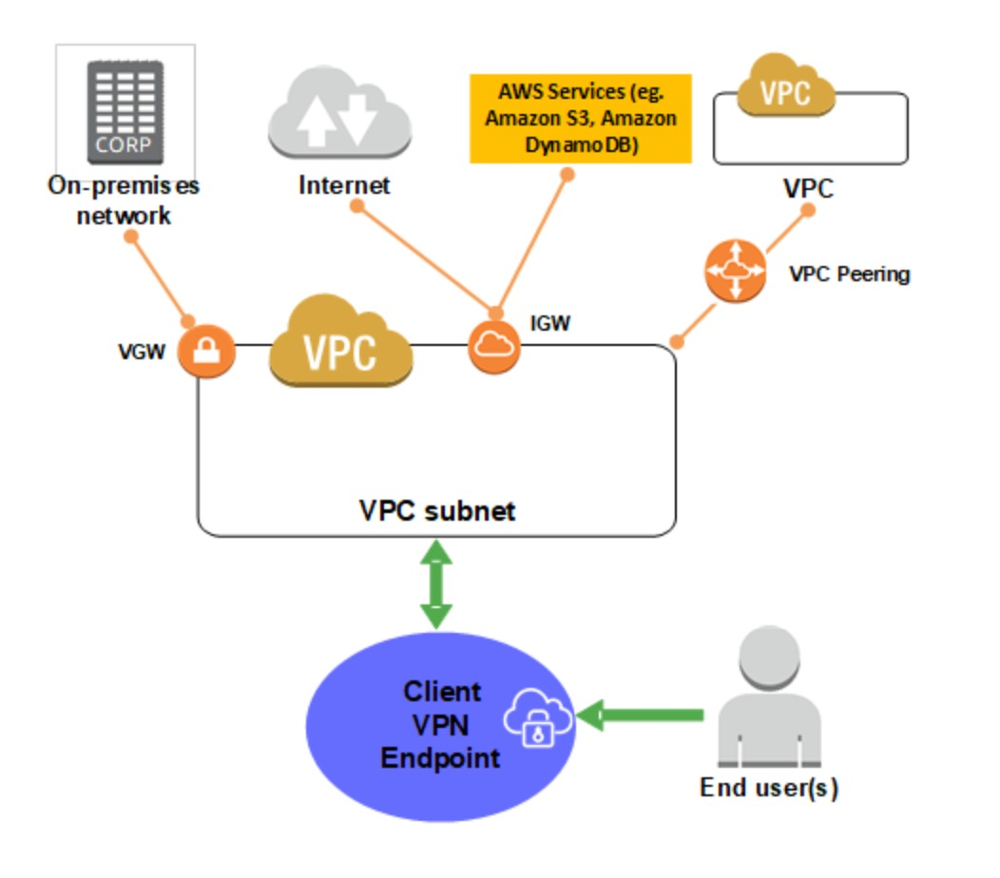
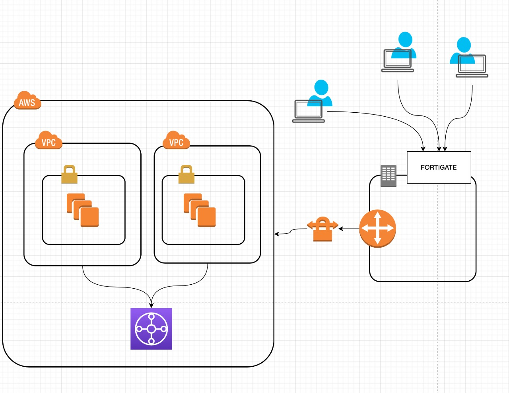
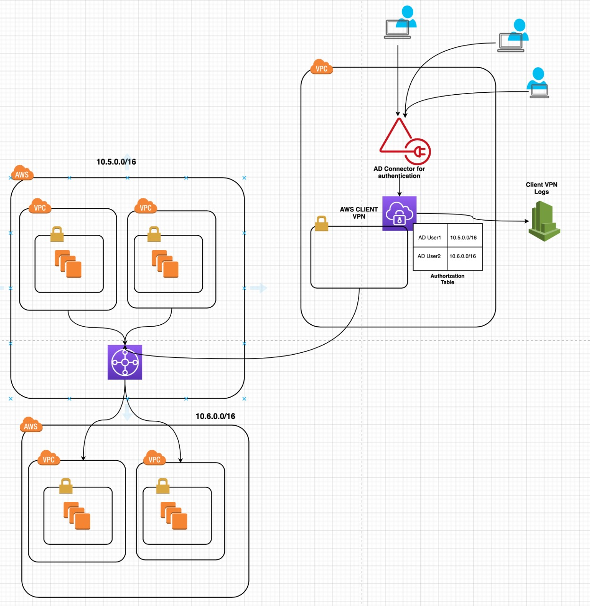

AWS ClientVPN with Transit Gateway
By Ramana Kumar...
Problem(s)
Wouldn’t it be good if there is a stable, seamless and secure connection from office network to aws vpcs hosted on multiple accounts.
What if users start working remotely from different networks ?
How about traceability of user activity ?
How reliable is office IPSec ?
Objective :
To enable remote work with seamless and secure connection from multiple networks to multiple vpcs hosted on multiple aws accounts.
Option(s) :
AWS Site-to-Site VPN (Site-to-Site VPN) connection
AWS Client VPN
AWS Site-to-Site VPN :
You can securely extend your data center or branch office network to the cloud with an AWS Site-to-Site VPN (Site-to-Site VPN)
connection. It uses internet protocol security (IPSec) communications to create encrypted VPN tunnels between two locations.

Challenges with Site-Site:
Below are some cons that were observed if site-site is used :
- Connection must be set from office network to AWS VPC.
- Every User/Network need to connect to office network before they establish a connection to VPC.
- Reliability issues with office networks.
- Dependency on power supply
- Dependency on office ISP
- Less traceability of user activity
AWS Client VPN :
AWS Client VPN is a managed client-based VPN service that enables you to securely access your AWS resources and resources in your onpremises network.
With Client VPN, you can access your resources from any location using an OpenVPN-based VPN client.

Pros of Client VPN :
- Secure connections
- Managed service
- High availability and elasticity
- Authentication
- Granular control
- Ease of use
- Manageability
Solution
Since there is a breaking difference from AWS Client VPN to Site-to-Site VPN in terms of reliability, the solution picked is AWS Client VPN with
Transit Gateway.
Implementation :
- Configure AWS client VPN in a landing aws account.
- Configure AWS Transit gateway between VPCs that are supposed to communicate privately.
- Configure AWS client VPN with AD connector.
- Authorize AD groups to CIDRs that need to be accessed.
- Configure client vpn routes on destination CIDRs that are supposed to be accessible by client vpn.
- Configure AWS client VPN in a landing aws account.

End of Story :
AWS Client VPN can authorize users via AD connector and provides connectivity to subnet associated with client VPN.
Since the subnet has communication with transit gateway, authorised users can connect to all the VPCs which are integrated to transit gateway.
Points to be Noted :
- AWS transit gateway supports connectivity to VPCs within same region.
- Transit gateway supports inter account connections
- Make sure all the route tables are properly configured to allow/exchange traffic from TGWID (transit gateway id).
References:
Thanks...